Uxmal: For many the most beautiful Maya site – and much quieter than Chichén Itzá. Uxmal is the masterpiece of the Puuc style: smooth lower walls topped by stone-mosaic friezes with lattice patterns and masks of the rain god Chaac. The Pyramid of the Magician has an oval base; legend says a dwarf built it in a single night. A UNESCO World Heritage Site since 1996.
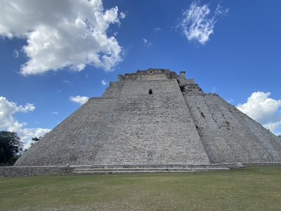
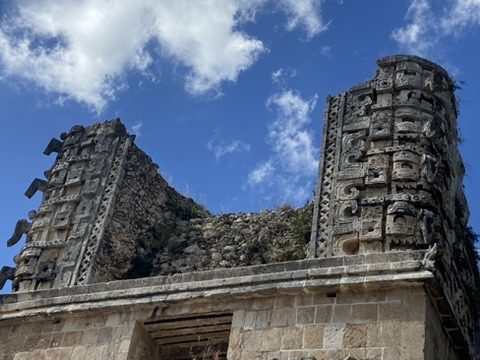
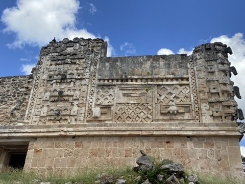
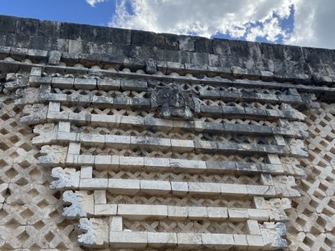
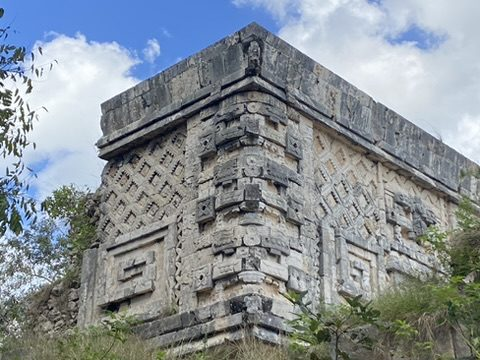
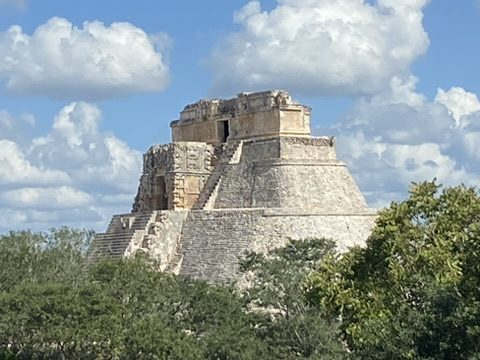
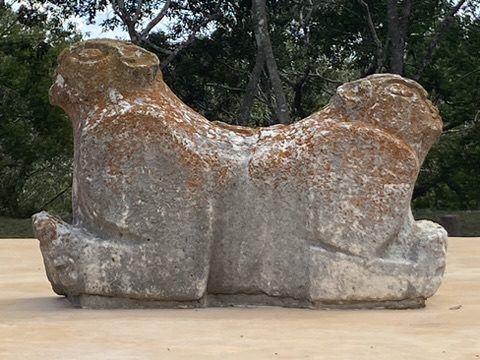
The double-headed jaguar throne in front of the Governor's Palace.
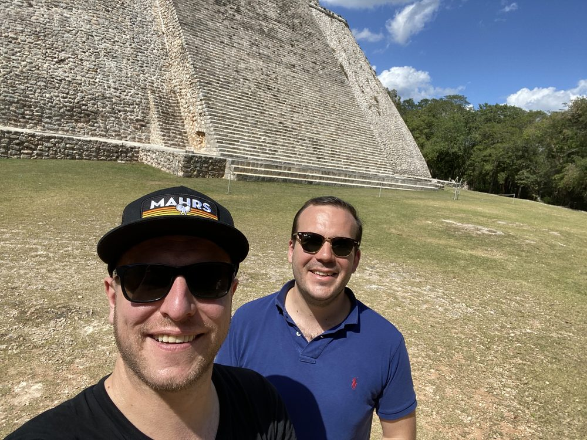
Hacienda Mucuyché: On the way to Mérida: an old henequen hacienda. Sisal was made here from agave fibres, Yucatán's "green gold" around 1900. Today it draws visitors with two cenotes connected by a canal. One is named after Empress Carlota, who is said to have bathed here in 1865.
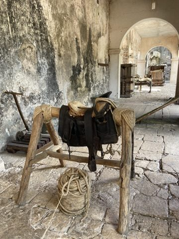
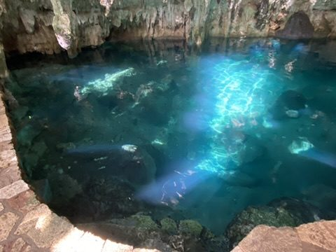
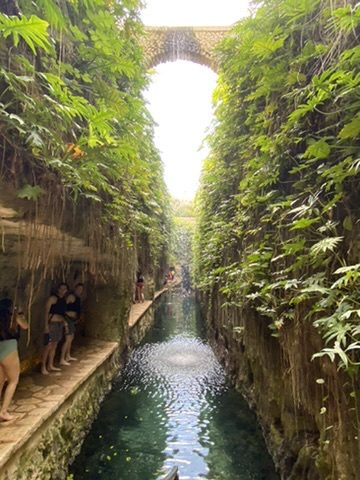
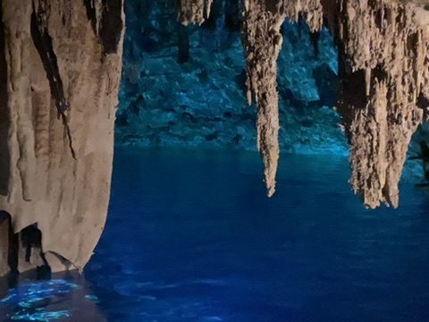
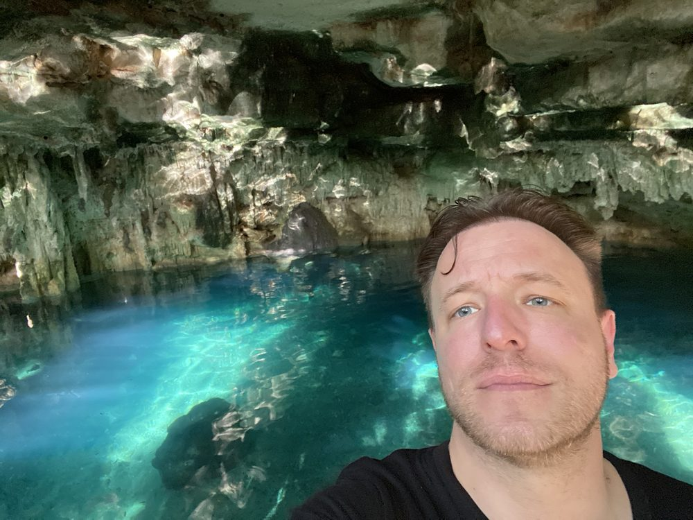
Arrival in Mérida: In the evening we reach Mérida, the "white city" and capital of Yucatán. Rooftop pool overlooking the city, then a drink in the old town.
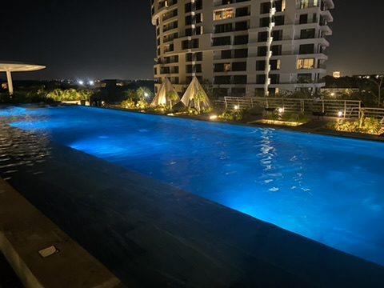
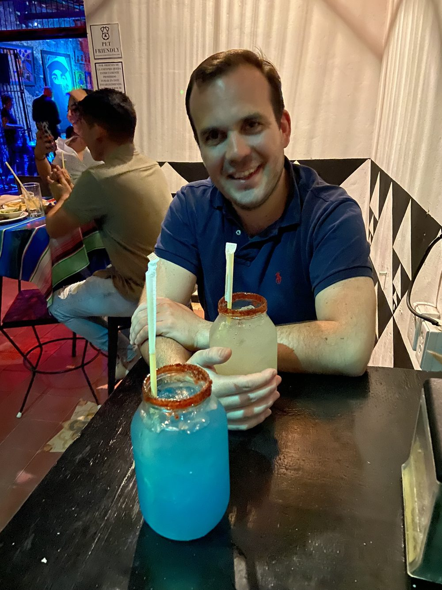